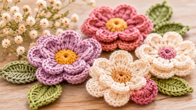

Flores hechas a crochet

Las flores a crochet son pequeñas creaciones que permiten combinar colores, formas y texturas. Son perfectas para decorar prendas, bolsos, accesorios o incluso crear pequeños ramos.
Materiales necesarios
- Hilo de algodón de diferentes colores.
- Una aguja de crochet adecuada al hilo.
- Tijeras.
- Aguja lanera para rematar.
Cómo comenzar
Para realizar una flor sencilla podemos empezar creando un anillo mágico. A continuación, tejemos varios puntos dentro del anillo para formar el centro de la flor.
Después realizamos las cadenetas y los puntos necesarios para formar los pétalos. Podemos utilizar un color diferente para conseguir un resultado más original.
Ideas para tus creaciones
Una vez terminadas, podemos unir varias flores para crear guirnaldas, decorar una manta, personalizar una bolsa o elaborar complementos hechos completamente a mano.